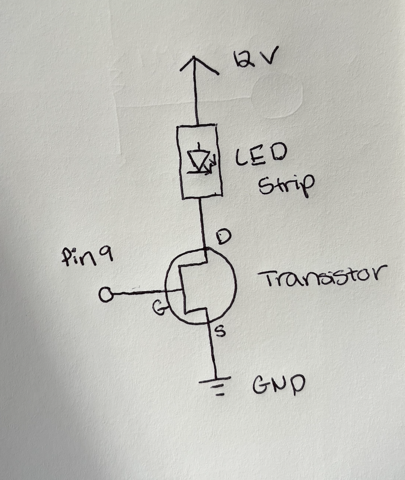
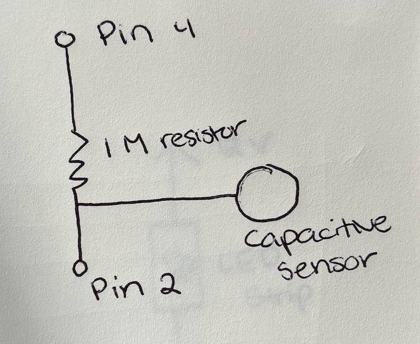
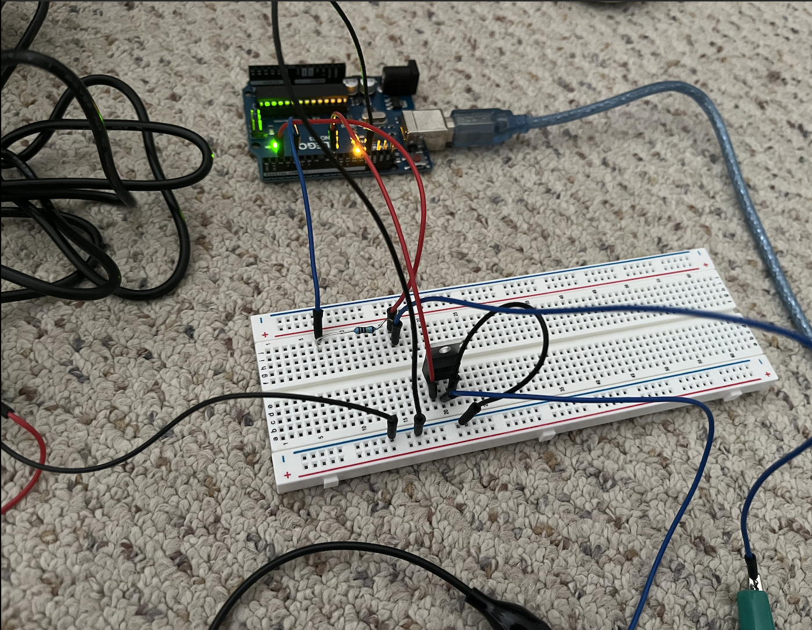
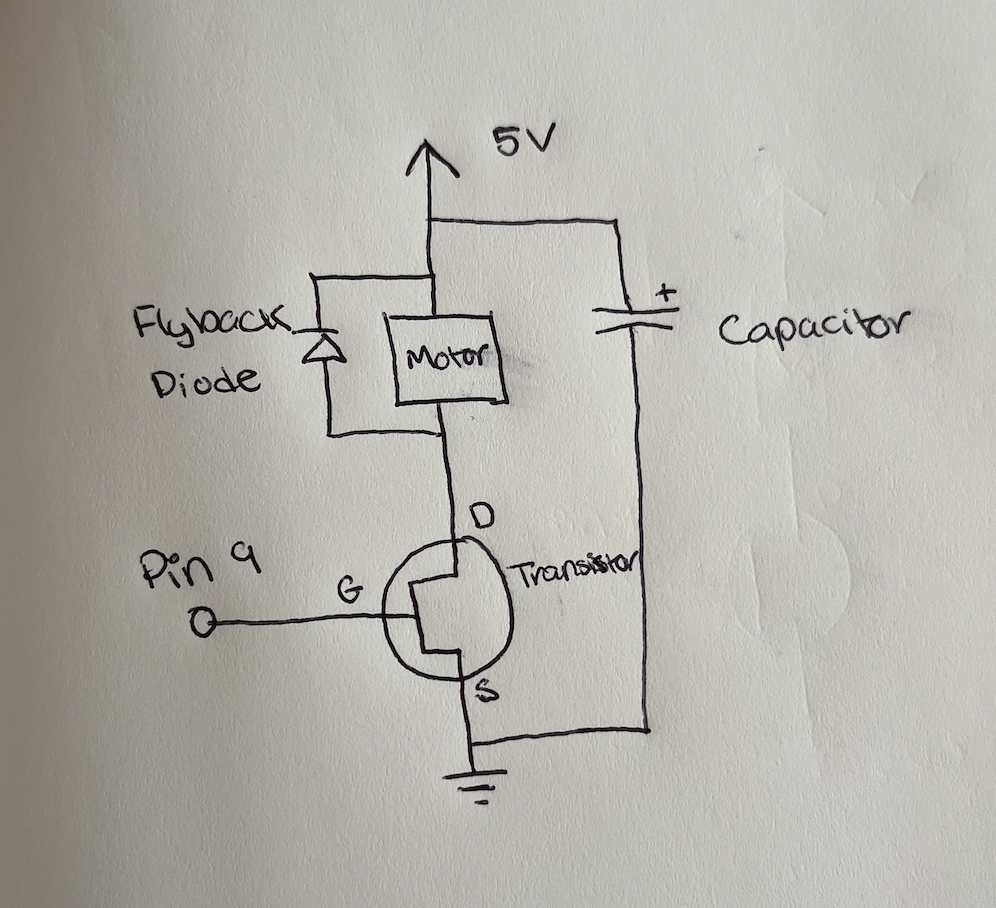
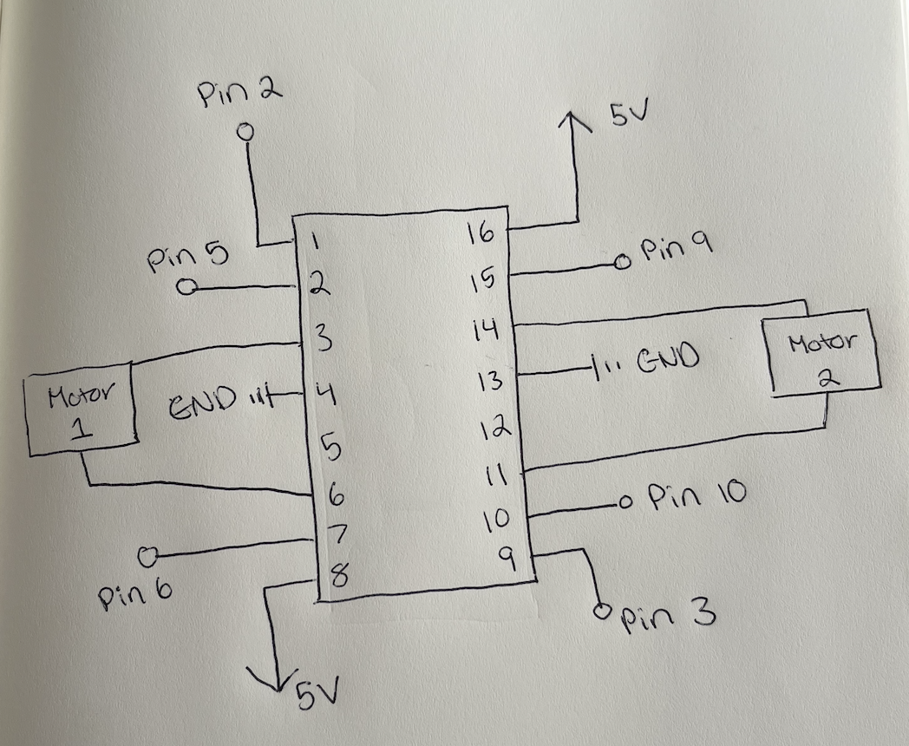

Here is a gif of the functioning circuit

Here is all the documentation for assignment 5!
Here are my drawings of the schematic for this circuit. I used the LED strip which I connected to an external power supply (12V) and to a N-MOSFET transistor which I connected to pin 9 and the ground on my Arduino. I also used the capacitive sensor which I connected to pins 2 and 4. I used a 1M ohm resistor in order to make the sensor require absolute touch in order to turn on the LEDs.
 Here is my circuit I made. I chose to use a capacitive sensor and the LED strip along with the N-MOSFET transistor and external power supply. I connected the capacitive sensor to pins 2 and 4 and used a 1M ohm resistor so that you would have to touch the metal object (coin) in order to turn on the LEDs. I connected the LED strip to the extenranl power supply and the transistor which was connected to pin 9 on my Arduino. Based on the specfications for the LED strip and the resistors that are included in the LED strip, it says that if using a 12V power source it will result in 1.5 A of current. According to the datasheet for the transistor I am using, it has a maximum current of 37.2 A so the amount of current that I am using is less than the maximum and is safe to use.
Here is a gif of the functioning circuit
Here is the code snipit from the Arduino code that I wrote for the circuit. I used the Capacitive Sensor library. I connected my LEDs through my trsnsistor to pin 9 and my capacitive sensor to pins 2 and 4. I set the pin mode of pin 9 to output which allows the PMW signal to control the gate of the transistor, allowing for the adruino to control a higher voltage than it could on its own. A higher PMW number results higher duty cycle and brighter LEDs, while a lower PMW number results in a lower duty cyclde and dimmer LEDs. I mapped the LED strip PMW number from 0 to 255 in relation to the sensor values between 200 and 1000. I chose the sensor values based on the values that I was receiving in my serial monitor when testing the capacitive sensor to make sure that the LEDs were able to reach full brightness when the coin was touched. I chose to use the smoothing method for every 10 readings because I was getting inconsistent readings when testing which was leading to flickering in my LEDs that I didnt want. I also chose to contrain the average reading value because sometimes during testing I was receiving variable readings from the sensor when I wasnt touching the coin and I wanted the LEDs to be completely off when the coin wasnt being touched. My code delays each reading by 50ms to reduce output in the serial monitor and allow the LEDs time to adjust.
#include <CapacitiveSensor.h> // Use capacitive sensor library
CapacitiveSensor cs_4_2 = CapacitiveSensor(4,2); // create a capacitive sensor object between pins 2 and 4
const int numReadings = 10; // number of readings to take before averaging
int readings[numReadings]; // the readings from the analog input
int readIndex = 0; // the index of the current reading
int total = 0; // the running total of the readings
int average = 0; // the average of the readings
int conAve = 0; // the aevarge reading within constraints
void setup() {
cs_4_2.set_CS_AutocaL_Millis(0xFFFFFFFF); // turn off autocalibrate on arduino
Serial.begin(9600); // initialize serial communications at 9600 bps
pinMode(9, OUTPUT); // set pin 9 to be an output for the LEDs
// initialize all the readings to 0:
for (int thisReading = 0; thisReading < numReadings; thisReading++) {
readings[thisReading] = 0;
}
}
void loop() {
long start = millis(); // record number of milliseconds that have passed
// subtract the last reading:
total = total - readings[readIndex];
long total1 = cs_4_2.capacitiveSensor(30); // record value returned from capaciitve sensor
// read from the sensor:
readings[readIndex] = total1;
// add the reading to the total:
total = total + readings[readIndex];
// advance to the next position in the array:
readIndex = readIndex + 1;
// if we're at the end of the array...
if (readIndex >= numReadings) {
// ...wrap around to the beginning:
readIndex = 0;
}
average = total / numReadings; // calculate the average:
conAve = constrain(average, 200, 1000); // constrain the average reading to between 200 and 1000
conAve = map(conAve, 200, 2000, 0, 255); // map capacitive sensor values to PMW for LEDs
analogWrite(9, conAve); // set pin 9 to the PMW number
Serial.print(millis() - start); // check on performance in milliseconds
Serial.print("\t"); // tab character for debug window spacing
Serial.println(average); // print sensor reading average
delay(50); // delay 100ms to limit data to serial port
}
1. According to the data sheet, pin 2 is Drain and pin 3 is Source. The maximum amount of current between these two pins is 37.2 A as specified by the data sheet as "Continuous Drain Current".
2. Draw a schematic for a circuit with using at least your arduino, a DC motor, a flyback diode, and capacitors between power and ground. In my Schematic I chose to cnnect my transistor to pin 9 on an Arduino. 
3. Draw a schematic using at least your arduino, this chip, and two motors. In my schematic I chose to connect motor 1 to pins 5 and 6 on my Arduino through the chip, and motor 2 to pins 9 and 10. I also connected motor 1 to pin 2 for enabling and motor 2 to pin 3. 
// set enabler pins
Motor1_EN = 2
Motor2_EN = 3
// set input pins for Motor 1
Motor1_1 = 5
Motor1_2 = 6
// set input pins for Motor 2
Motor2_1 = 9
Motor2_2 = 10
function setup() {
// Set pins as output
pinMode(Motor1_1, OUTPUT)
pinMode(Motor1_2, OUTPUT)
pinMode(Motor2_1, OUTPUT)
pinMode(Motor2_2, OUTPUT)
pinMode(Motor1_EN, OUTPUT)
pinMode(Motor2_EN, OUTPUT)
// Enable motors
digitalWrite(Motor1_EN, HIGH)
digitalWrite(Motor2_EN, HIGH)
}
function loop() {
// Move motors both forward
digitalWrite(Motor1_1, HIGH)
digitalWrite(Motor1_2, LOW)
digitalWrite(Motor2_1, HIGH)
digitalWrite(Motor2_2, LOW)
delay(2000)
// Move motors both backward
digitalWrite(Motor1_1, LOW)
digitalWrite(Motor1_2, HIGH)
digitalWrite(Motor2_1, LOW)
digitalWrite(Motor2_2, HIGH)
delay(2000)
// Motor1 forward, Motor2 backward
digitalWrite(Motor1_1, HIGH)
digitalWrite(Motor1_2, LOW)
digitalWrite(Motor2_1, LOW)
digitalWrite(Motor2_2, HIGH)
delay(2000)
// Motor1 backward, Motor2 forward
digitalWrite(Motor1_1, LOW)
digitalWrite(Motor1_2, HIGH)
digitalWrite(Motor2_1, HIGH)
digitalWrite(Motor2_2, LOW)
delay(2000)
}